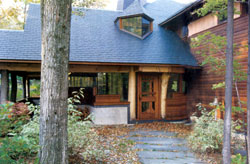
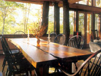
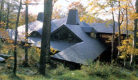

The Tree House
February/March 2004
Green Homes
By Maren Thompson Bzdek
When architect David Sellers received an assignment to build a home in Vermont's Green Mountains on a sharply sloping, uncleared woodland site, he didn't hesitate to take on the difficult project. In fact, he thought of it as an exciting chance to flesh out his ideas for reducing both the eyesore factor and the environmental impact of building in a relatively unspoiled setting. It didn't hurt that the client offered what every architect dreams of-a nearly unlimited timeline and a great deal of budgetary and creative control.
Sellers already had proved his mettle: Named as one of the world's 100 foremost architects by Ambitectural Digest in 1992, he had achieved recognition for his emphasis on designing with nature as well as his work with pedestrian and human-scale settlement patterns.
The prospective homeowner did give Sellers a few important guiding principles: He asked that the home reflect the Japanese architectural traditions he'd come to love through visits to his daughter-in-law's homeland-simple, natural materials and a connection to the surrounding environment-and he wanted trees to be in the forefront of the design.
A DISCRETE FOOTPRINT
Sellers began to plot a scheme for a structure that would seem to grow right out of the hillside. "We tried to leave the immediate surroundings wild. There's no lawn or garden, just a few native plants for minimal landscaping," he says. "An inch away from the house is wilderness."
Sellers carefully considered all of the treasures that clearing the existing site would offer, from huge stone slabs to stately, solid trees. "It's like a game of rock, paper, scissors," he says. "You look at the choices available to you, all of which might work, and consider factors like aesthetics and embodied energy. Perhaps the first choice has low embodied energy and is essentially free because it's found on site. The second choice might be economical as well because it's mass-produced, but it involves a whole lot of embodied energy because of manufacture and transportation. Then you have to think about what other materials you'll use to go along with it. For example, if you put in milled 2-by-4s, you have to use a lot of other materials to cover them up and support them, and that involves more embodied energy."
After local stone and salvaged trees were selected as the major building materials, Sellers created a design that relied on unsawn timber as the structure's vertical supports. Construction began in 1996, but the house wasn't completed until two years later.
Rick Moore, the contractor, had to throw out all conventional timetables and procedures, and give in to the demands of the site. "The land was so hard to work on," he says. "We had to start at one end and work to the other, piece by piece, in a sort of backwards fashion. All the retaining walls and landscaping were done before we started on the house. The framework of the tree supports was put in place first, and everything was cut with chain saws, so it was slow work. We did the framing through the winter."
Sellers' approach to the project was collaborative and organic in nature, to say the least, Moore recalls. "There was never any true architectural drawing, just sketches," he says. "They gave us a pretty good idea, but all of the detailing was a surprise. Only the foundation had true blueprints. And Sellers wasn't working very far ahead of us. We used a clay model as our guide-and we had to resurrect that from the architect's dumpster."
Looking at the holistic beauty of the finished project, dubbed the "Tree House" because of the extensive use of unsawn timber, one might find this story a bit hard to believe. How could a house that seems so unusually grounded in its place possibly have been created with conventional building practices?
The roofline echoes the surrounding ridges and is designed for snow to pile on its uphill, near-to-the-ground side so the house blends in with the winter environment. "It's designed so that, when the roof is covered with snow in the winter, you can't even see the house from that side," Sellers says.
Because the house follows the site's natural undulations, it was necessary to place the entrance at one end, with the main hallway along the contour line. This means that all of the public spaces-living room, dining room and eat-in kitchen-are on the downhill side with the view. The house snuggles up against the hill and opens up dramatically to the outside, taking full advantage of natural daylight.
LOCAL FLAVOR
The concept of using indigenous materials for the Tree House was a top-down decision, starting with native Vermont slate for the roof. "Then we realized we'd have big rocks pulled from the site for the foundation, so we started refining it even more-using peeled logs from the site for the interior structure."
The house really shines in these interior details, which reflect Sellers' commitment to bringing outside materials indoors and remaining true to the natural beauty of the surroundings.
For an elegant design solution, Sellers says, "Don't use rocks if you don't have rocks on your site. Use what meets the main criteria for value, which is based on perceived appropriateness for the site." The happy result of such a decision is that it leads you naturally to support the local economy and craftspeople, who are adept at working with native materials.
About one-third of the Tree House's vertical supports are trees from the property. Because they are unsawn, their inherent warmth, sound-absorption quality and strength are preserved. None of the wood is stained, and some trees even retain their bark.
"The logic of using a tree you have to cut down to clear the site, instead of a milled 2-by-4 from a tree cut down thousands of miles away, is that it adds flavor and sculptural quality, and a connection to the local environment that's impossible to get any other way," Sellers says.
The beauty of the majestic trees is deceptively simple. "To remove the bark on some of the pillars, we had to hand peel them and then clean them up with mallets," Moore says. "They are all sealed with Verathane, a water-based urethane. We put hot paraffin into the tree joints as needed to slow drying and prevent splitting. But the trees are shrinking a little bit, as we expected."
Sellers wanted the tree skeleton of the building to be apparent, so that the lines could be visually traced throughout the house. The big trees go from the upper floors all the way through to the basement, making the structure clear and understandable. "The elegance then comes from simplicity, rather than a lot of elaborate, decorative elements," he says. "The house is designed to unfold as an experience. Upon entering, you walk down a long hall through the 'muscles' of the trees lined up along the hallway, with the main spaces opening up to your right and the windows framed by big trees."
COMMON ' cents'
For many people, the choice of local building materials is as much about their wallet as it is about aesthetics. In the Tree House, much of the flooring, trim and door material is beechwood because Vermont experienced a beech blight in the late 1990s. The team salvaged some of those dying trees and had them milled and dried. The beech blended right in with the other materials. "Favoring local timber sources over the more popular Western timber species is akin to the growing popularity of microbreweries," Sellers says. "People want that local flavor."
Sellers experienced other similar good fortune. Looking for trim to match the slate roof, he called several salvage yards until he finally hit the jackpot. One had just demolished an old school and had 50 old slate blackboards. "I said, 'We'll take all of them!"' he says. To turn this amazing find into workable trim, Sellers turned to the same local expert-an experienced slate installer hailing from a long line of slate men- who had applied the slate roof.
The sauna building, with walls built entirely of these recycled slate blackboards, was added as the final touch. It has no foundation; to avoid disturbing the topsoil, the crew drilled holes and inserted stainless steel pipes into the bedrock for supports. "The building sits like a spider, with pins locking it into the ground," Sellers says. "Water can run undiverted under it."
Troy Osborne, a member of Sellers' firm, likens the collaborative effort of architect, contractor and homeowner to the process of making a film or performing in a jazz group. "It's taking a unique concept, adding particular players and seeing what comes of it," he says.
As the head of that ensemble, Sellers is pleased that everything came together so pleasantly. "As an architect, I can only argue my case for a short time-while I'm working on the project. So in the end, the building must be a self-evident statement about materials and design working together that lasts after I walk away."
Reprinted from Natural Home magazine [ www.naturalhomemagazine.com ; (800) 340-5846].
Building Tips From the Architect
David Sellers offers these tips for any building or remodeling project, including those on a tight budget:
Be a cheapskate . "Find local materials that are free, and use them as you find them. This will connect the house to the local landscape and save you money. For example, the local beechwood used for flooring in the Tree House, even after milling and drying, was still cheaper than buying something like precut maple."
Splurge on the details . "Spend a decent portion of your budget on a few special, stunning details-perhaps the kitchen cabinets or the handrailings. Employ skilled local craftspeople for those projects."
Recruit local talent . Use your project's exceptional elements to attract the attention of other local talent. Through the work of many hands, it's possible to turn your project into a community showpiece. "If you make your building project something unique and special, people will come out of the woodwork to give you a break and be part of it, especially if it might add to their portfolio of work and possible exposure." Mother Earth News
|
 This inviting home, made from local trees and stone, sits deep in the Vermont woods. |
 The house follows the site's natural curves, so the entrance opens to the main hallway (above), which runs along the contour line. The main living spaces are on the downhill side of the side, where the view is best. |
 A local craftsperson constructed the unique dining-room table from cherry scrap. |
|
 The slate roof blends quietly with the wooded landscape. When snow covers the roof, the house is camouflaged among the surrounding ridges. |
|
|